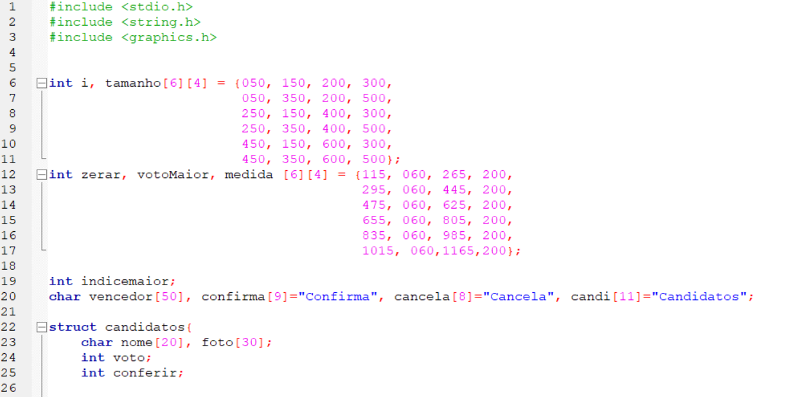
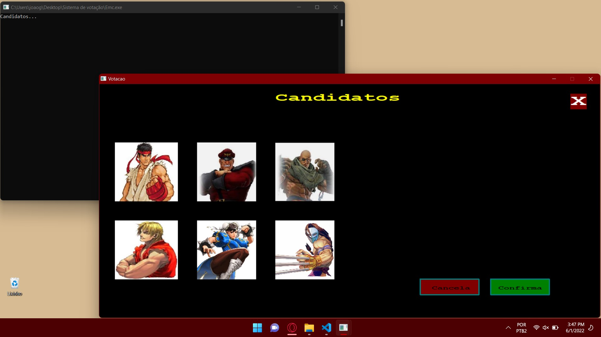
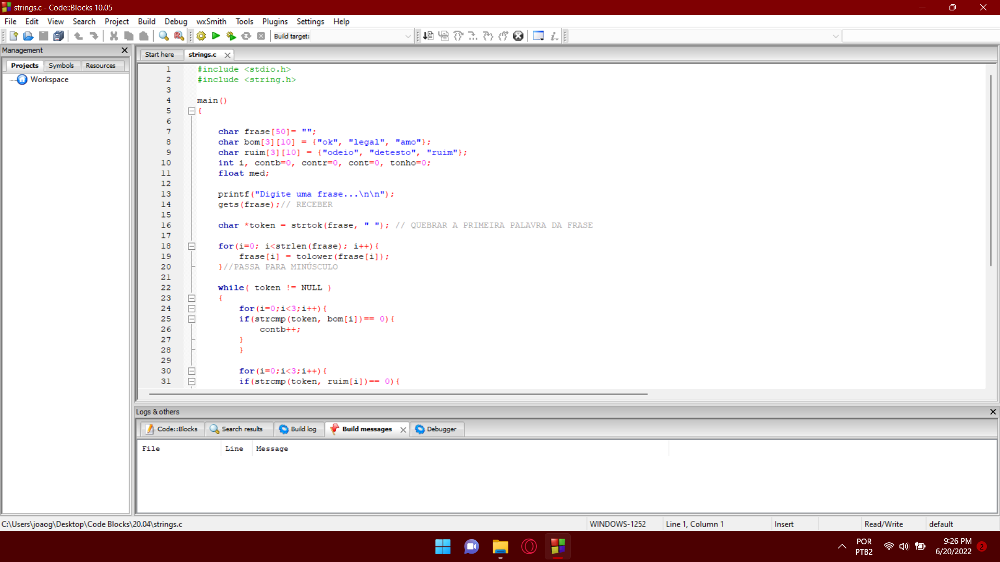
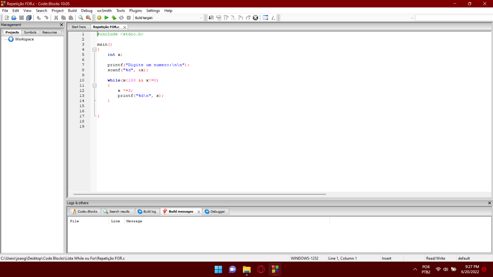
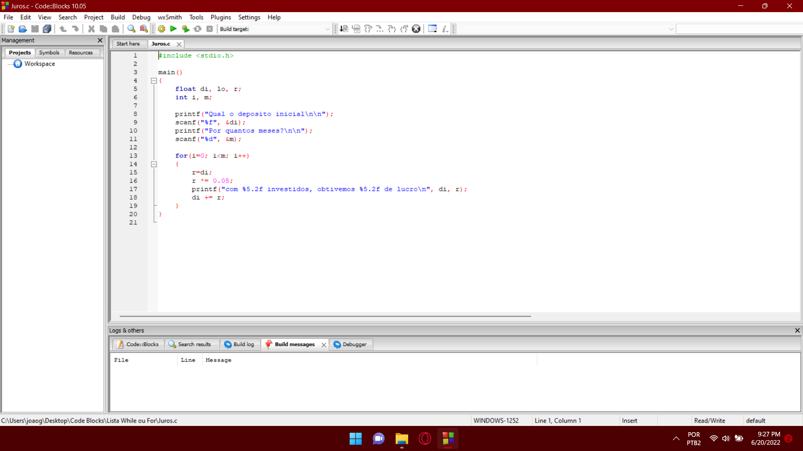
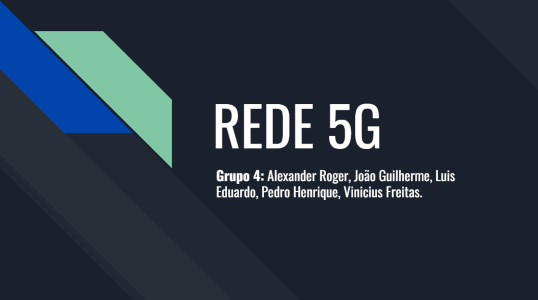
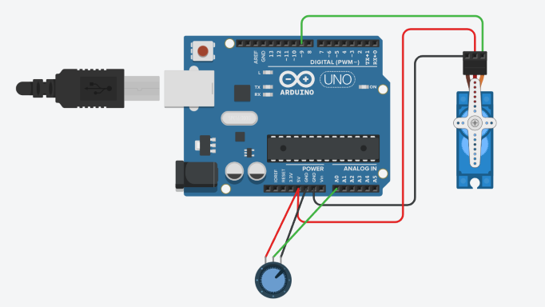
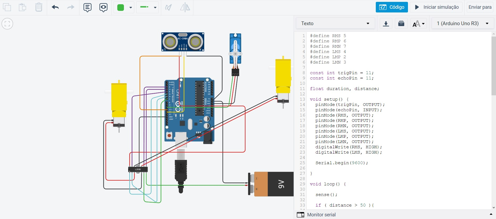

Gostaria de destacar os projetos propostos pelos professores, o que gostariam que fizéssemos e as experiências, boas e ruins que obtivemos com elas...
Alguns projetos com o LOUCO do Faria, um pouco das aulas do Cefas, que no começo terminavam em um certo desespero por não conseguir fazer, e uma ou outra bobeira que estou tentando fazer por fora!
E até mesmo o que foram/estão sendo incríveis de trabalhar, os seminários do Fabiano, a urna do João, o portfólio que por ter escolhido fazer em HTML está ajudando no meu desenvolvimento pessoal e não menos importante o robozinho do Faria.
O que está dando mais trabalho e um dos mais divertidos
O projeto que mais me animou para fazer, logo que soube do que se tratava e que poderia ser algo personalizado, com a nossa cara, e que teríamos que DEFINITIVAMENTE fazer tudo do zero, foi muito foda, uma mistura, talvez, de desespero e animação foi tomando conta e com 3 dias de projeto anunciado já estava com o código em produção...
 Apesar de ainda estar meio feio e grosseiro, TÁ FUNFANDO, ainda temos mais uns dias para arrumar uma coisinha ou outra, porém só de estar conseguindo fazer, sofrendo com a graphics e alguns surtos vai dando certo, vejo que está ajudando emuito minha lógica, ir lá e "pegar no chifre da vaca", fazer você mesmo ajuda em muita coisa, na programação não se faz diferente, ainda acho que o meu melhor jeito de aprender é pegar pra fazer (e sofrer um pouco no processo...). Espero que o João goste do resultado!
O primeiro contato com a programação
O Cefas é um professor mais "faça você mesmo", no começo eu me assustei bastante por ter tido pouquíssimo contato com essa área e chegar em uma sala onde um cara estava falando sobre fluxograma, alguns probleminhas e que teríamos ter de resolver de alguma forma. Depois de um tempo vi e percebi, que é assim que aprendo a programar, indo pondo a mão na massa e quebrando a cabeça pra ver se sai alguma coisa!
  Cefas é um cara muito legal, gente boa, apesar de ser meio quietão e na dele, gosto da aula dele e aprendi muito tendo ele para tirar dúvidas e rindo do nome das nossas funções, até quebrando um pouco a cabeça para nos explicar que raio era uma função.
Um dos mais divertidos de fazer, porém...
Definitivamente o projeto que saiu de sala de aula bem estruturado, tudo combinado, como íriamos estudar, fazer a até apresentar. Mas como nem tudo são flores, tivemos algumas dificuldades no caminho, tempo que desse para todos montarem o slide, foco no objetivo do trabalho, falta de preparo para o dia da apresentação e também de responsabilidade...
Nosso tema era a Rede 5G, um dos assuntos do momento, por conta disso e das tantas fake- news que contornam essa rede, decidimos fazer um trabalho para desvendá-las, explicar bem sobre o que de fato ela é e como irá mudar a vida de todos que possuem, ou não, um celular em mãos e descobrindo infelizmente que não é mil maravilhas.
Apesar de tudo o que disse, após perder uma aula de cálculo para organizar todo, mundo, treinar falas com quem não sabia muito bem o que dizer e até alterações de última hora. Deu tudo certo, fomos avaliados com a nota máxima e uma lição para os próximos trabalhos em grupo que vierem...
O primeiro projeto de fato que nos foi apresentado!
Chegando na faculdade, primeira semana, não vou dizer um "oba-oba", pois a primeira aula de cálculo já havia acontecido, mas muito feliz de ter iniciado, principalmente visto que não era brincadeira...
O Boca chegou falando de um tal de portfólio, para contar nossa história, o porquê de estarmos iniciando o curso, o porquê de se esforçar tanto nisso, mas principalmente para entender um pouco sobre nós...
E tá aí, foi um projeto feito com muito carinho e como a primeira coisa que eu havia programado em HTML foi essa, fiquei muito orgulhoso do que consegui entregar, não estava mil maravilhas, mas valeu o aprendizado, de verdade!
Não atoa estou com este projeto agora, tentando fazer melhor o que eu iniciei!
Éeee o do Faria tem até vídeozinho
O começo com o Faria foi bem turbulento, sério, não dava para entender nada do que acontecia na aula, dá para ver que ele tem domínio total sobre o assunto, mas PQP, porém tudo foi melhorando com o tempo também, imagino que como nós que fomos avançando no curso fomos entendendo mais o dialeto com que ele nos comunicava e o cara é gente boa demais, não tem jeito...
 Estes são alguns do projetos do Faria, entre muitas dúvidas e pesquisas na internet a aula dele é divertida e bem aplicada, ainda mais com este projeto de desenvolvermos um tipo de robozinho, do jeito que quisermos e para fazer o que quisermos, dá um tantinho de tranalho, mas ainda assim ver algo feito por você funcionando é sensacional!
Vou postar fotos das listas aqui...
Eu quis colocar o Delboni nesta pois achei importante ressaltar quem mais de fato fez eu cair na real por mais que a matéria seja bem espinhosa, como o João disse. Ele é um cara legal, melhorou muito nas suas aulas e por mais que reclamem dele, está disposto a responder qualquer pergunta e ainda caímos no fato de que o ensino público brasileiro durante a pandemia foi por água abaixo, quem não deu seu jeito de estudar vai sim ter muita dificuldade nessa matéria.